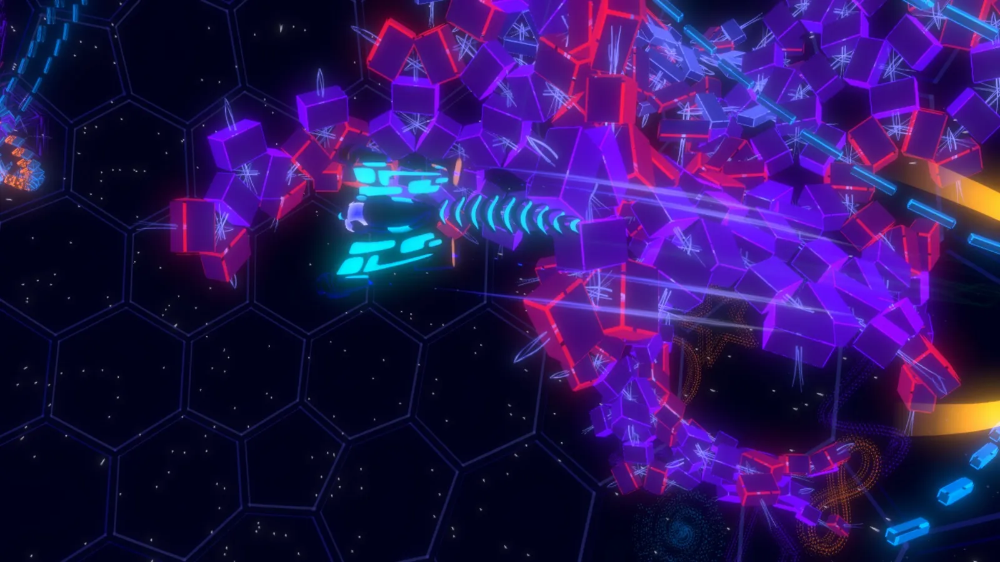

OwnedUI rebuild
I redid the game’s UI, architecture and look. The ship HUD moved onto subscriptions: 4500bd949 cut ShipHUDController by ~300 lines into HudSubscriptionSO and per-ability views, and 662e300ed deleted 2,591 lines of old HUD scripts across 80 files. Then a new visual language across menus, the hangar, the arcade flow, the event feed and toasts.